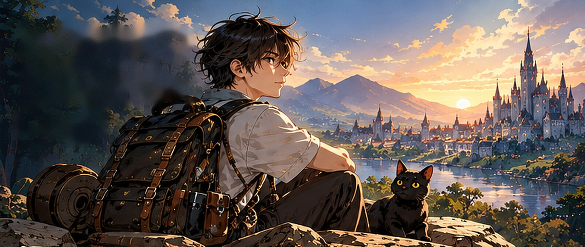
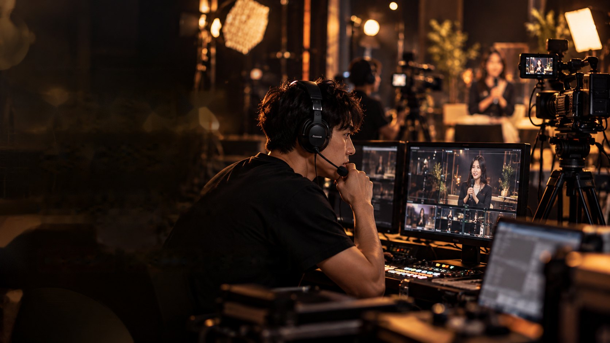
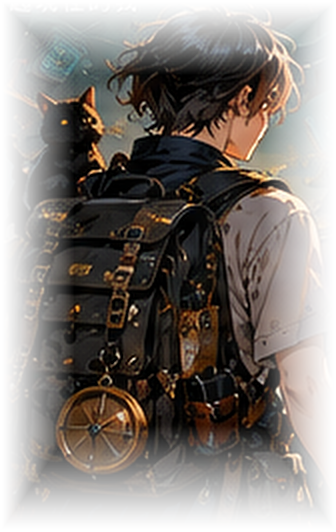

營運 × 流程管理
- ERP／庫存／採購／進出貨實務
- 人員協作、教育訓練與現場執行
- 流程拆解、異常處理與資料整理
- 從現場問題找出可改善流程

把每一次經驗
變成能力，
用 AI 打開更多可能。— ODIN
一邊是學生生活，一邊是物流現場；
在雙重節奏中，學會分配時間與扛起責任。
左邊是課堂與校園，右邊是早餐店的現場節奏；
在忙碌之中建立服務感與工作默契。
在規律與紀律之中鍛鍊體能、穩定度與團隊默契，
也學會面對壓力與任務。
從備餐、出餐到現場配合，
在穩定節奏裡累積服務感、細節意識與工作效率。

從詢價、下單、進貨、驗收到出貨，
在直播的快節奏下處理多工作業，
遇到狀況即時應變、把流程接下去。
在商品調撥、盤點、補貨與出貨之間，
透過 ERP 與庫存流程，建立整理能力、效率意識
與處理異常的習慣。
從現場經驗延伸到數位工具與系統思維，
開始把流程、資料與想法轉成可執行的方案。
把細節、邏輯與驗證能力整理成方法，
開始從系統角度找問題、做確認、追結果。
從現場到數位，這些能力都是我在旅程中逐步累積的。

從自己每天需要判讀市場資訊的需求出發，透過 AI 協作逐步建立控制中心、盤前研究、報告、持股追蹤、回測與驗證流程。目前核心流程已可運作，介面、規則與細節仍持續迭代。
這個專案最能代表我的工作方式：先定義問題與規則，再讓 AI 協助實作；完成後不只看「能不能跑」，還會檢查資料、流程、狀態與邏輯是否符合預期，再持續迭代。
從自己使用 Google Maps 找素食餐廳時，資訊太籠統、菜單難找且常不是最新版的痛點出發，重新整理「素食者真正想快速看到什麼」，再透過 AI 協作把概念做成可操作的台中素食地圖網站 Prototype。目前仍持續調整資訊層級、介面與功能流程。
這個專案不是用來證明我是一名 UI 設計師，而是呈現我如何從真實問題出發，決定什麼資訊最重要、怎麼呈現比較好用，再與 AI 協作把想法做成可以操作、可以測試、可以繼續改善的網站。